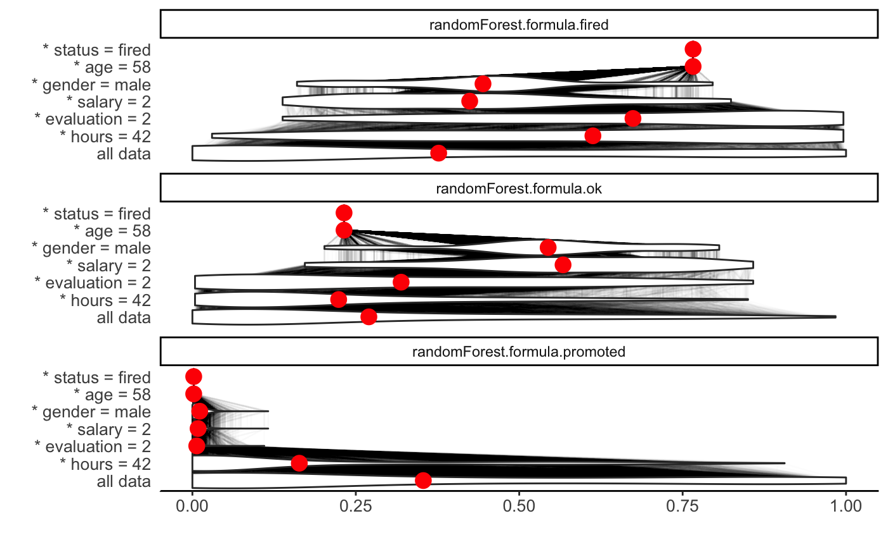
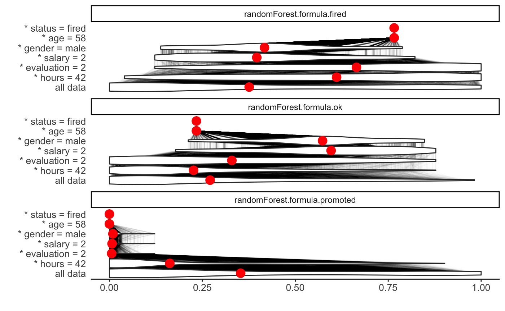
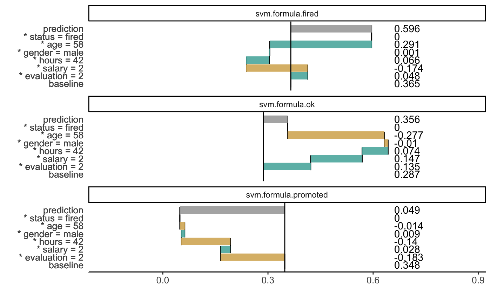
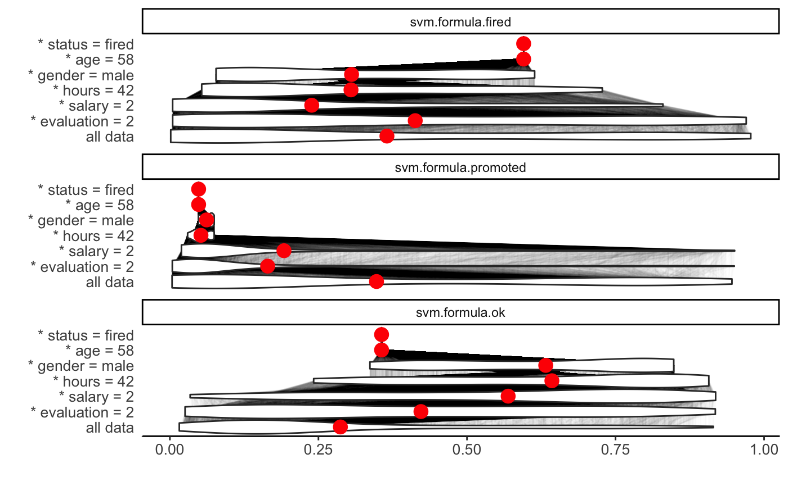
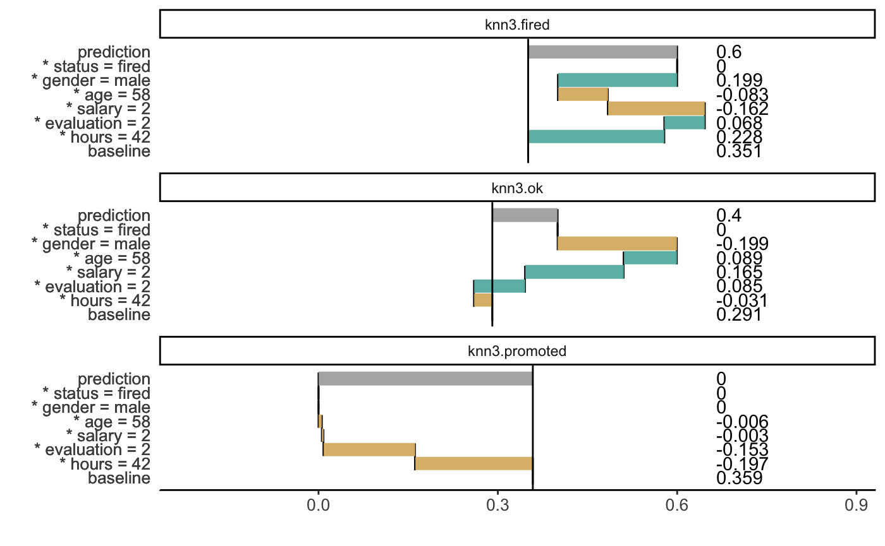
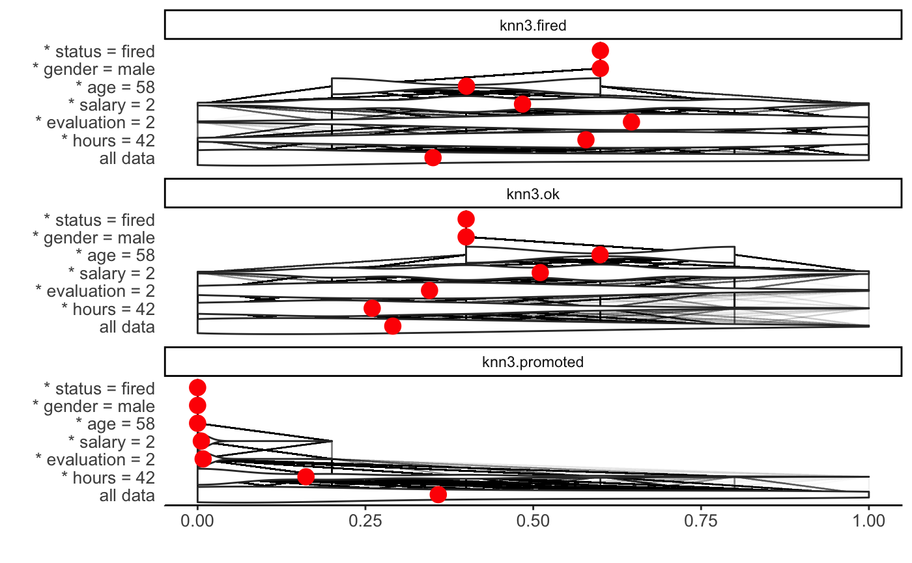
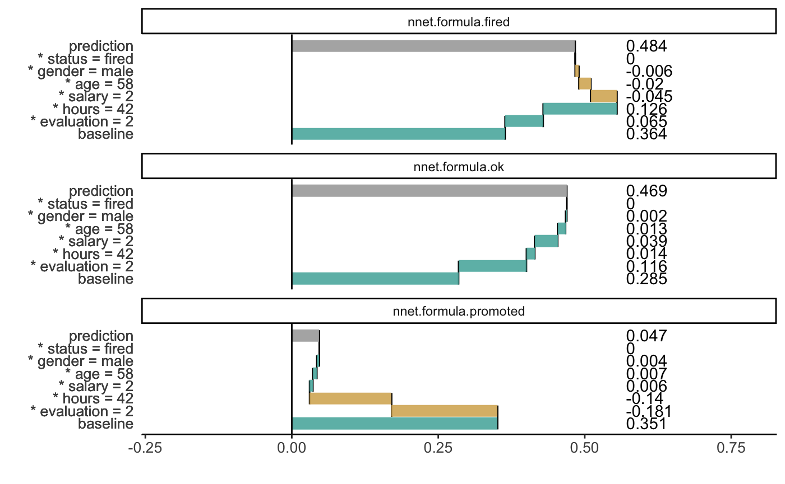
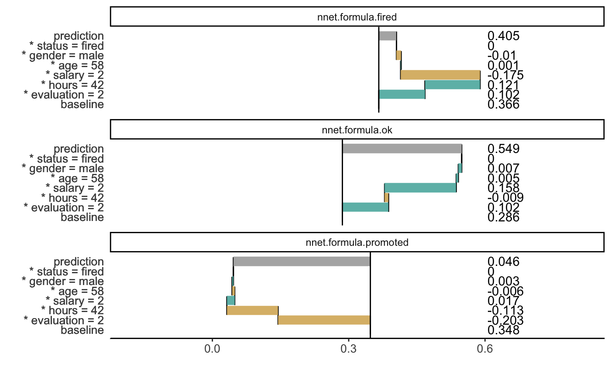
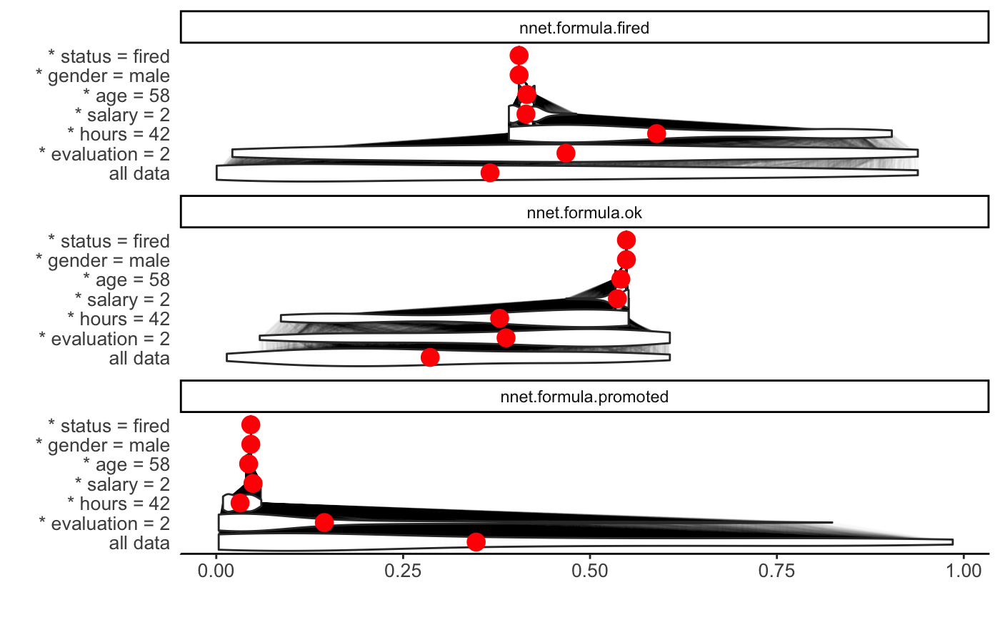

breakDown2 plots for classification models
Dariusz Komosinski
2018-12-30
vignette_breakDown2_classification.RmdHere we will use the HR data to present the breakDown2 package for classification models.
# devtools::install_github("ModelOriented/DALEX2")
library(DALEX2)
library(ggplot2)
library(breakDown2)
head(HR)#> gender age hours evaluation salary status
#> 1 male 32.58267 41.88626 3 1 fired
#> 2 female 41.21104 36.34339 2 5 fired
#> 3 male 37.70516 36.81718 3 0 fired
#> 4 female 30.06051 38.96032 3 2 fired
#> 5 male 21.10283 62.15464 5 3 promoted
#> 6 male 40.11812 69.53973 2 0 fired#> gender age hours evaluation salary status
#> 1 male 57.72683 42.31527 2 2 firedglm
First, we fit a model.
#> # weights: 21 (12 variable)
#> initial value 8620.810629
#> iter 10 value 7002.127738
#> iter 20 value 6239.478146
#> iter 20 value 6239.478126
#> iter 20 value 6239.478124
#> final value 6239.478124
#> convergedTo understand the factors that drive predictions for a single observation we use the breakDown2 package.
However sometimes we need to create our own predict function which returns probalilities.
p_fun <- function(object, newdata){predict(object, newdata=newdata, type="prob")}
# p_fun <- function(object, newdata){
# if (nrow(newdata) == 1) {
# as.data.frame(t(predict(object, newdata, type = "prob")))
# } else {
# as.data.frame(predict(object, newdata=newdata, type="prob"))
# }
# }Now we create an object of the break_down class. If we want to plot distributions of partial predictions, use argument keep_distributions.
bd_glm <- local_attributions(m_glm,
data = HR_test,
new_observation = new_observation,
keep_distributions = TRUE,
predict_function = p_fun)We can simply print the result.
Or plot the result which is more clear.

Use the start_baseline argument to set the origin of plots.

Use the plot_distributions argument to see distributions of partial predictions.

For another type of models we proceed analogously.
randomForest
library(randomForest)
m_rf <- randomForest(status ~ . , data = HR)
p_fun <- function(object, newdata){predict(object, newdata=newdata, type="prob")}
bd_rf <- local_attributions(m_rf,
data = HR_test,
new_observation = new_observation,
predict_function = p_fun,
keep_distributions = TRUE)
bd_rf#> contribution
#> randomForest.formula.fired: baseline 0.376
#> randomForest.formula.fired: * hours = 42 0.235
#> randomForest.formula.fired: * evaluation = 2 0.053
#> randomForest.formula.fired: * salary = 2 -0.268
#> randomForest.formula.fired: * gender = male 0.021
#> randomForest.formula.fired: * age = 58 0.349
#> randomForest.formula.fired: * status = fired 0.000
#> randomForest.formula.fired: prediction 0.766
#> randomForest.formula.ok: baseline 0.271
#> randomForest.formula.ok: * hours = 42 -0.044
#> randomForest.formula.ok: * evaluation = 2 0.103
#> randomForest.formula.ok: * salary = 2 0.267
#> randomForest.formula.ok: * gender = male -0.023
#> randomForest.formula.ok: * age = 58 -0.339
#> randomForest.formula.ok: * status = fired 0.000
#> randomForest.formula.ok: prediction 0.234
#> randomForest.formula.promoted: baseline 0.353
#> randomForest.formula.promoted: * hours = 42 -0.191
#> randomForest.formula.promoted: * evaluation = 2 -0.156
#> randomForest.formula.promoted: * salary = 2 0.001
#> randomForest.formula.promoted: * gender = male 0.002
#> randomForest.formula.promoted: * age = 58 -0.009
#> randomForest.formula.promoted: * status = fired 0.000
#> randomForest.formula.promoted: prediction 0.000
#> baseline: 0


SVM
library(e1071)
m_svm <- svm(status ~ . , data = HR, type = "C-classification", probability = TRUE)
p_fun <- function(object, newdata){
p <- predict(object, newdata = newdata, probability = TRUE)
attr(p, "probabilities")
}
bd_svm <- local_attributions(m_svm,
data = HR_test,
new_observation = new_observation,
keep_distributions = TRUE,
predict_function = p_fun)
bd_svm#> contribution
#> svm.formula.fired: baseline 0.366
#> svm.formula.fired: * evaluation = 2 0.048
#> svm.formula.fired: * salary = 2 -0.174
#> svm.formula.fired: * hours = 42 0.067
#> svm.formula.fired: * gender = male 0.001
#> svm.formula.fired: * age = 58 0.290
#> svm.formula.fired: * status = fired 0.000
#> svm.formula.fired: prediction 0.598
#> svm.formula.promoted: baseline 0.348
#> svm.formula.promoted: * evaluation = 2 -0.183
#> svm.formula.promoted: * salary = 2 0.028
#> svm.formula.promoted: * hours = 42 -0.140
#> svm.formula.promoted: * gender = male 0.009
#> svm.formula.promoted: * age = 58 -0.014
#> svm.formula.promoted: * status = fired 0.000
#> svm.formula.promoted: prediction 0.048
#> svm.formula.ok: baseline 0.286
#> svm.formula.ok: * evaluation = 2 0.135
#> svm.formula.ok: * salary = 2 0.147
#> svm.formula.ok: * hours = 42 0.073
#> svm.formula.ok: * gender = male -0.010
#> svm.formula.ok: * age = 58 -0.277
#> svm.formula.ok: * status = fired 0.000
#> svm.formula.ok: prediction 0.354
#> baseline: 0


knn
library(caret)
m_knn <- knn3(status ~ . , data = HR, k = 5)
bd_knn <- local_attributions(m_knn,
data = HR_test,
new_observation = new_observation,
keep_distributions = TRUE)
bd_knn#> contribution
#> knn3.fired: baseline 0.351
#> knn3.fired: * hours = 42 0.228
#> knn3.fired: * evaluation = 2 0.068
#> knn3.fired: * salary = 2 -0.162
#> knn3.fired: * age = 58 -0.083
#> knn3.fired: * gender = male 0.199
#> knn3.fired: * status = fired 0.000
#> knn3.fired: prediction 0.600
#> knn3.ok: baseline 0.291
#> knn3.ok: * hours = 42 -0.031
#> knn3.ok: * evaluation = 2 0.085
#> knn3.ok: * salary = 2 0.165
#> knn3.ok: * age = 58 0.089
#> knn3.ok: * gender = male -0.199
#> knn3.ok: * status = fired 0.000
#> knn3.ok: prediction 0.400
#> knn3.promoted: baseline 0.359
#> knn3.promoted: * hours = 42 -0.197
#> knn3.promoted: * evaluation = 2 -0.153
#> knn3.promoted: * salary = 2 -0.003
#> knn3.promoted: * age = 58 -0.006
#> knn3.promoted: * gender = male 0.000
#> knn3.promoted: * status = fired 0.000
#> knn3.promoted: prediction 0.000
#> baseline: 0


nnet
#> # weights: 93
#> initial value 12042.587787
#> iter 10 value 8176.621740
#> iter 20 value 7493.985087
#> iter 30 value 6563.601285
#> iter 40 value 6391.881126
#> iter 50 value 6303.910449
#> iter 60 value 6174.486079
#> iter 70 value 6098.409292
#> iter 80 value 6028.495276
#> iter 90 value 5967.923945
#> iter 100 value 5958.419467
#> final value 5958.419467
#> stopped after 100 iterationsbd_nnet <- local_attributions(m_nnet,
data = HR_test,
new_observation = new_observation,
keep_distributions = TRUE)
bd_nnet#> contribution
#> nnet.formula.fired: baseline 0.364
#> nnet.formula.fired: * hours = 42 0.247
#> nnet.formula.fired: * evaluation = 2 0.083
#> nnet.formula.fired: * age = 58 -0.011
#> nnet.formula.fired: * gender = male 0.001
#> nnet.formula.fired: * salary = 2 0.000
#> nnet.formula.fired: * status = fired 0.000
#> nnet.formula.fired: prediction 0.684
#> nnet.formula.ok: baseline 0.285
#> nnet.formula.ok: * hours = 42 -0.023
#> nnet.formula.ok: * evaluation = 2 0.031
#> nnet.formula.ok: * age = 58 0.013
#> nnet.formula.ok: * gender = male -0.001
#> nnet.formula.ok: * salary = 2 0.000
#> nnet.formula.ok: * status = fired 0.000
#> nnet.formula.ok: prediction 0.305
#> nnet.formula.promoted: baseline 0.351
#> nnet.formula.promoted: * hours = 42 -0.224
#> nnet.formula.promoted: * evaluation = 2 -0.114
#> nnet.formula.promoted: * age = 58 -0.001
#> nnet.formula.promoted: * gender = male 0.000
#> nnet.formula.promoted: * salary = 2 0.000
#> nnet.formula.promoted: * status = fired 0.000
#> nnet.formula.promoted: prediction 0.011
#> baseline: 0

